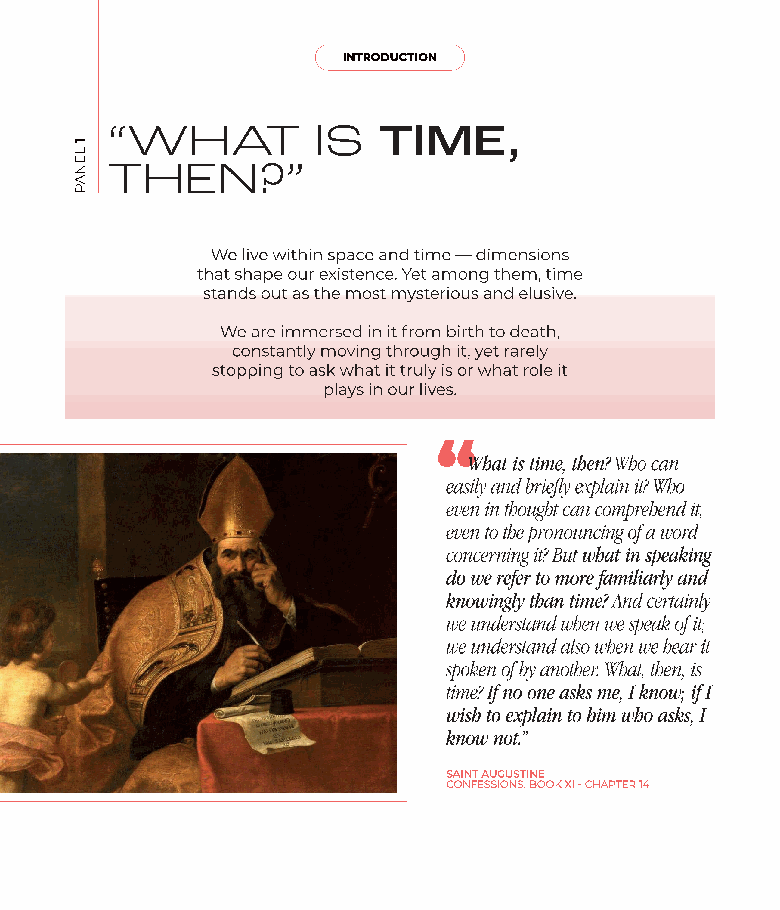
The theme of the New York Encounter this year invites us to look at our need for a place where our humanity is welcomed and nurtured in its truth. We had the desire to look at time, one of the fundamental dimensions of our human experience. We want to explore it, to be able to discover what it is and be helped to recognize where it is approached according to its real nature.
We live within space and time— dimensions that shape our existence. Yet among them, time stands out as the most mysterious and elusive. We are immersed in it from birth to death, constantly moving through it, yet rarely stopping to ask what it truly is or what role it plays in our lives.
Saint Augustine (in the 4th century) expresses this in a very clear way: "What is time, then? Who can easily and briefly explain it? Who even in thought can comprehend it, even to the pronouncing of a word concerning it? But what in speaking do we refer to more familiarly and knowingly than time? And certainly we understand when we speak of it; we understand also when we hear it spoken of by another. What, then, is time? If no one asks me, I know; if I wish to explain to him who asks, I know not."
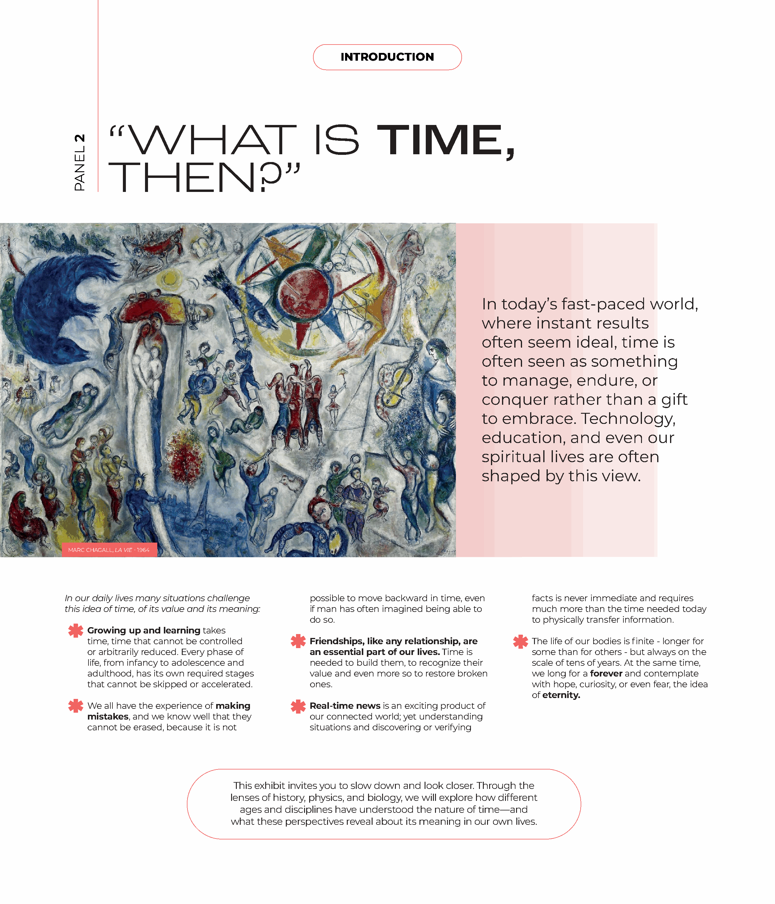
It is difficult for us to explain what time is, yet in the way we approach many life situations we have unspoken yet strong expectations about time, its role and its value. In today's fast-paced world, where instant results often seem ideal, time is often seen as something to manage, endure, or conquer rather than a gift to embrace. Technology, education, and even our spiritual lives are often shaped by this view.
We can all think of moments in our life that have challenged this idea of time as a purely incidental condition that we should be able to bend to the idea we have of it: When we have to face our own mistakes or the mistakes of others close to us. Our expectation is often that we should be able to avoid them or at least fix them. Yet, we are not able to see the future (which would help avoid them) and we cannot go back into the past (to fix them). All of us have the experience of learning and most of teaching (at home, in school, or in the workplace). Especially recently, with all the technological tools that we can access, we often assume understanding should be quick, and knowing should follow right after understanding. Yet, the reality is that learning times are not always predictable and knowing requires much more time than the one needed for understanding. Real-time news is an exciting product of our connected world. We now expect that should be the norm. Yet understanding situations and discovering or verifying facts is never immediate and requires much more than the time needed today to physically transfer information. We desire eternity, and we think that this means we should be able to preserve youth forever. Nonetheless our bodies inexorably age with the passing of time.
In general we often move under the impression that waiting is a waste: if something requires waiting it means that there is something wrong. Let's think of building friendships, forgiving relationships... Yet change is never instantaneous. Let's pause for a moment (probably 30 minutes), and looking through the lenses of history, physics, and biology, let's explore how different ages and disciplines have understood the nature of time—and what these perspectives reveal about its meaning in our own lives.
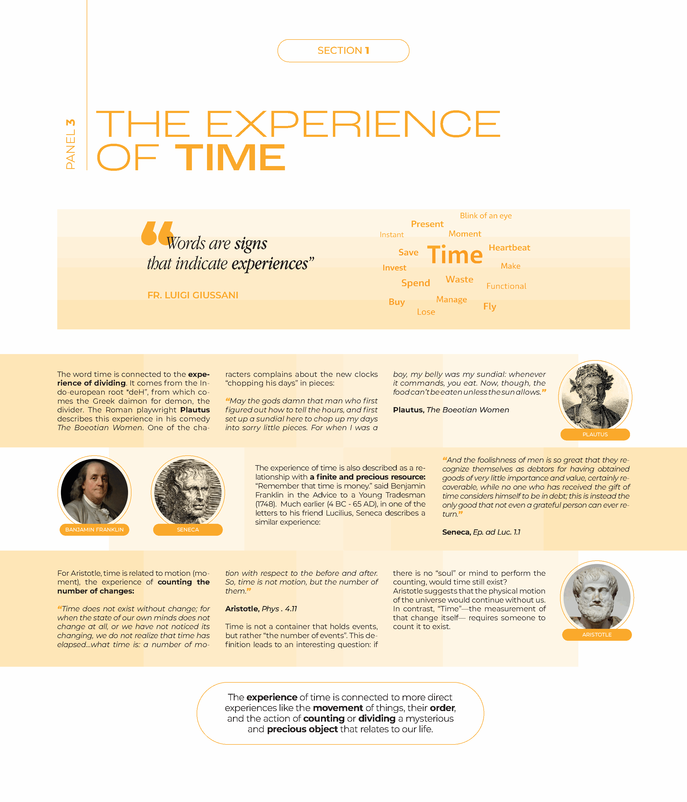
How did we discover time? Luigi Giussani in the Religious Sense tells us that "words are names of experiences" so if we want to understand the word, we need to understand what experience it is connected to. We can try to understand the word "Time" through different experiences.
The experience of dividing: The word "time" derives from the root "deH" or "Tem" (to cut). Tempus (a slice of duration) and templum (a slice of space) have a similar origin. In a comedy from Plautus the connection between time and dividing is exemplified in a playful way: Plautus's character complains about sundials "chopping his day into pieces," he does not like the new invention of the clocks because he cannot eat his meal when he wants anymore.
The experience of dealing with a precious and finite resource: Benjamin Franklin famously says "time is money" and if you notice in the cloud of words top right many of the verbs we use for time: spend, invest, save, waste... apply as well to money. More deeply Seneca describes how time is an invaluable gift that cannot be repaid or recovered like other debts.
Connection to motion (moment): Aristoteles tries to define time connecting it to the experience of motion, think at how we use the word "moment" to indicate a fraction of time (moment originally was just a small movement and in physics momentum is the mass times the velocity of an object). No movement, no time. This was Aristotle's experience. He goes beyond realizing that time is not the actual movement but the number of movements "the number of changes" that we can count. But if we need to count to discover time, what if there is nobody counting? Would there still be time? Interesting question we will discover more about this. For now: we already learned that the experience of time is connected to more direct experiences like the movement of things, their order, and the action of counting or dividing a mysterious and precious object that relates to our life.
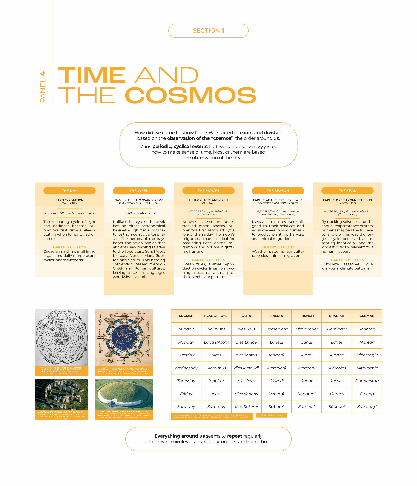
How did we come to know time? We started to count and divide it based on the observation of the "cosmos": the order around us. Many periodic, cyclical events that we can observe suggested how to make sense of time. Most of them are based on the observation of the sky.
The Day, looking at the sun raising and setting; The week looking at the 7 visible wanderers (planets) in the sky: the Sun, The moon, Mars, Mercury, Jupiter, Venus and Saturn. We dedicate one day to each of them and we get the week, that is about 1/4 of... The month, based on the observation of the lunar phases; The Seasons, based on the observation of the sun's position in the sky and the changes of the weather and finally the Year, based on the observation of the fixed stars.
For sure our ancestors spent a lot of time looking at the sky and their experience was that everything rotated and repeated around them, the sun, the moon, the stars... So was their image of the cosmos, the universe was mostly circular (as in the images) and also their idea of time (as pointed out in the next panel).
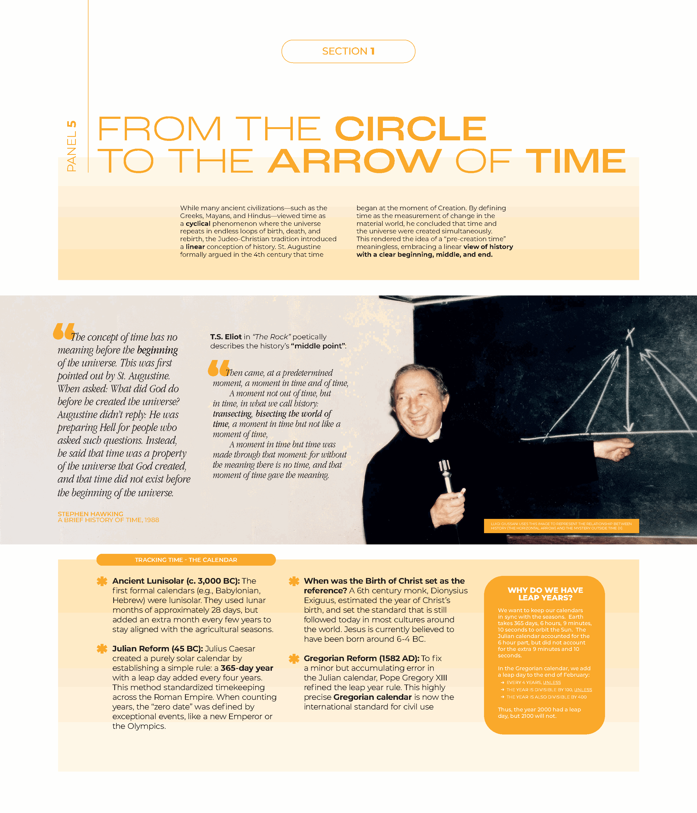
Many ancient civilizations—such as the Greeks, Mayans, and Hindus—viewed time as a cyclical phenomenon where the universe repeats in endless loops of birth, death, and rebirth. It is the Judeo-Christian tradition that introduced a linear conception of history. St. Augustine was the one that formally argued in the 4th century that also time has a beginning at the moment of Creation.
This is well described by the famous Physicist STEPHEN HAWKING: "The concept of time has no meaning before the beginning of the universe. This was first pointed out by St. Augustine. When asked: What did God do before he created the universe? Augustine didn't reply: He was preparing Hell for people who asked such questions. Instead, he said that time was a property of the universe that God created, and that time did not exist before the beginning of the universe."
Time has a beginning, a middle point and possibly an end. T.S. Eliot describes the "middle point" this way: "Then came, at a predetermined moment, a moment in time and of time, A moment not out of time, but in time, in what we call history: transecting, bisecting the world of time..." Today most of the world uses this date, the birth of Christ, as the year zero. On the right, we see Luigi Giussani's representation of the arrow of time, the history, indicated by the horizontal line, and the religions, the diagonal arrows attempting to reach the X, the mystery outside time, and the event, when the mystery decided to enter time.
Keeping track of time, dividing and counting is reflected in the history of the calendars that since the initial lunisolar calendars adopted by the Babylonians developed into the current Gregorian calendar that has a very complicated way to account for the fact that the year is not exactly 365 days: the leap year and its rules. At this point we saw how we can keep track of time looking at natural events, but there was a moment in history when we invented a new way to keep track of time...
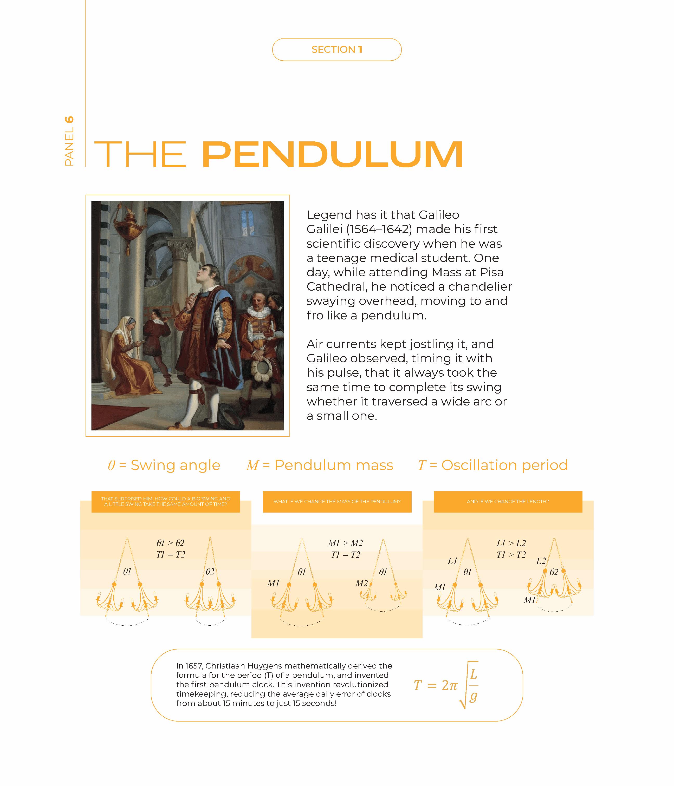
Legend has it that Galileo Galilei (1564–1642) made his first scientific discovery when he was a teenage medical student. One day, while attending Mass at Pisa Cathedral, he noticed a chandelier swaying overhead, moving to and fro like a pendulum. Air currents kept jostling it, and Galileo observed, timing it with his pulse, that it always took the same time to complete its swing whether it traversed a wide arc or a small one. That surprised him: How could a big swing and a little swing take the same amount of time?
Galileo discovered a way to keep track and count time that was precise and controllable. In 1657, Christiaan Huygens mathematically derived the formula for the period (T) of a pendulum and invented the first pendulum clock. This invention revolutionized timekeeping, reducing the average daily error of clocks from about 15 minutes to just 15 seconds!
Huygens clock worked similarly to a Metronome, the pendulum keeps the time, every time it passes the center you can hear a tick and the pendulum gets a little push to keep it going. This is why you need to wind the spring every now and then. To make a clock you just need to count the ticks and keep track of the number. For example, if I pull this lever every four ticks, I hear a bell. I can invent another lever that every so many bells... This is essentially the pendulum clock, a system of gears that count the ticks and move the hands of the clock.
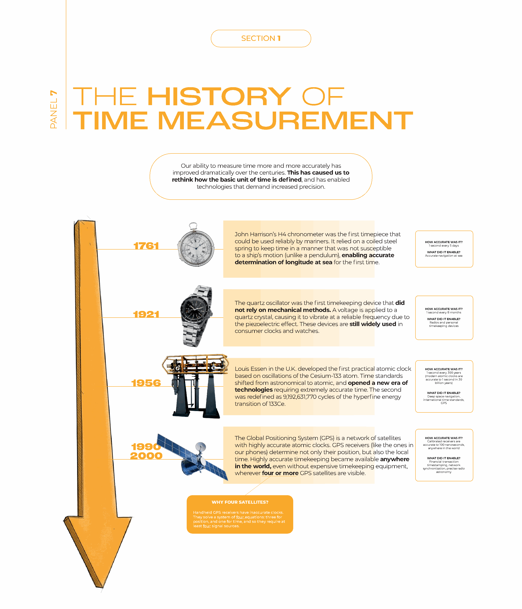
From that moment our ability to measure time increasingly accurately has improved dramatically over the centuries. This has caused us to rethink how the basic unit of time is defined and has enabled technologies that demand increased precision.
1761: After the pendulum clocks, John Harrison's H4 chronometer was the first timepiece that could be used reliably by mariners. It relied on a coiled steel spring to keep time in a manner that was not susceptible to a ship's motion (unlike a pendulum), enabling accurate determination of longitude at sea for the first time. If you know at what time the sun rises you can calculate how east or west you are, essentially the time zone.
1921: The quartz oscillator was the first timekeeping device that did not rely on mechanical methods. A voltage is applied to a quartz crystal, causing it to vibrate at a reliable frequency due to the piezoelectric effect. These devices are still widely used in consumer clocks and watches. The quartz oscillator is like a tuning fork that vibrates when electricity is applied like when you hit a tuning fork. To make a clock out of it you need a way to count the number of vibrations (which is probably complicated).
1956: Louis Essen in the U.K. developed the first practical atomic clock based on oscillations of the Cesium-133 atom. Time standards shifted from astronomical to atomic, opening a new era of technologies requiring extremely accurate time. The second was redefined as 9,192,631,770 cycles of the hyperfine energy transition of 133Ce.
Note that, like Aristoteles suggested at the beginning, to define time we need to count the number of some periodic events, we need something to move, to change. The atomic clock is the core technology for the GPS satellite that sends a signal at a very constant interval of time. Handheld GPS receivers have inaccurate clocks. They receive the signal from at least 4 GPS satellites and solve a system of four equations: three for position, and one for time. A very complicated equation that we will talk more about in the following.
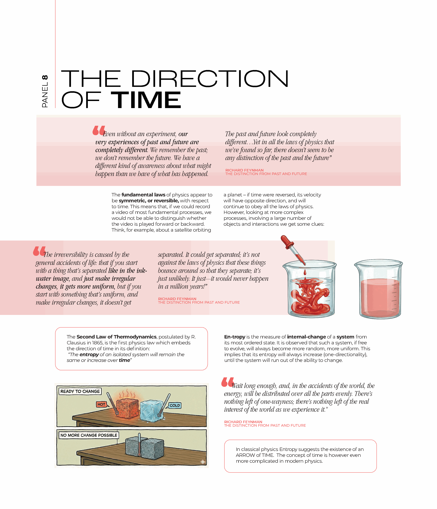
What distinguishes the FROM PAST From the FUTURE? "Even without an experiment, our very experiences of past and future are completely different. We remember the past… Yet in all the laws of physics that we've found so far, there doesn't seem to be any distinction between the past and the future… "Richard Feynman "The distinction from Past and Future"
The fundamental laws of physics that we know are symmetric, or reversible, with respect to time. Imagine for example, looking at a satellite orbiting a planet – if time were reversed, its velocity will have the opposite direction, and will continue to obey all the laws of physics. Only looking at more complex processes, involving many objects and interactions we get some clues.
"The irreversibility is caused by the general accidents of life: that if you start with a thing that's separated like in the ink-water image, and just make irregular changes, it gets more uniform, but if you start with something that's uniform, and make irregular changes, it doesn't get separated. It could get separated; it's not against the laws of physics that these things bounce around so that they separate; it's just unlikely. It just—it would never happen in a million years!" The Second Law of Thermodynamics, postulated by R. Clausius in 1865, is the first physics law which embeds the direction of time in its definition: "The entropy of an isolated system will remain the same or increase over time."
To visualize this law with a simple example, imagine these two blocks are the whole universe. At the beginning they are in this state, one very hot and one very cold. We can think of this state as "ready to change". As soon as the contact is made, they start to exchange energy and the flow will mostly go from the hot to the cold through a full history of temperature and intermediate states will happen. But eventually they will reach the same temperature, the state we describe as no more change possible, the state of maximum entropy. Our designer, preparing the exhibit, asked a good question, what if I take one block and put it in the oven and the other I put in the refrigerator? I can restart the process. Yes, but to do that you need someone from outside the system, outside the universe, outside the space and time to do that. It would not break any laws of physics currently known.
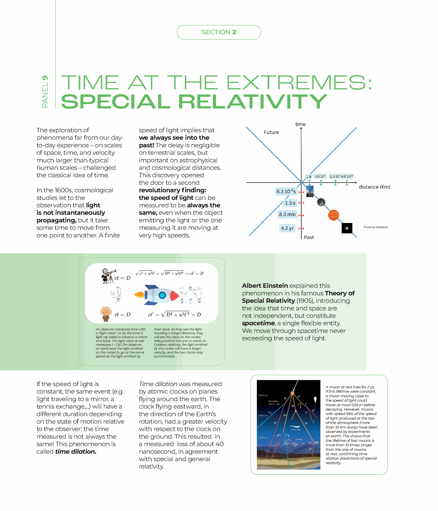
The exploration of phenomena far from our day-to-day experience – on scales of space, time, and velocity much larger than typical human scales – challenged the classical idea of time. In the 1600s, studies of the satellites of Jupiter led to the observation that light is not instantaneously propagating, but it takes a finite time to move from one point to another. A finite speed of light, 300000 Km/s, implies that we always see into the past! The delay is negligible on terrestrial scales, but important on astrophysical and cosmological distances. This is illustrated in the figure that shows the time a light signal takes to reach us from various objects as a function of the objects' distance. The Empire State Building is about 2 km from here, so the images we see left a few microseconds ago. The moon is 380 thousand kilometers away, the image we see left 1.3s ago. Proxima Centauri, the closest star to our sun, is 40 trillion of Kms away, this corresponds to 4.2 light years.
This discovery opened the door to a second, more revolutionary finding: the speed of light is always the same, even when the object emitting the light is moving. Notice that this is very counterintuitive. Imagine observing a person standing on a train and throwing a ball. The velocity of the ball will be given by the sum of the train velocity and the velocity of the ball as measured by the person on the train. On the other hand, Einstein, Lorentz and Poincare' realized that if you replace the ball with a ray of light, the velocity of the light is always the same, irrespective of the train velocity! They are right, and the intuitive, "Galilean", law for adding velocities only holds for slow-moving objects. Albert Einstein explained this phenomenon in his famous Theory of Special Relativity (1905), introducing the idea that time and space are not independent, but constitute spacetime, a single flexible entity. We move through spacetime never exceeding the speed of light.
Indeed the constancy of the speed of light has an important consequence for our understanding of time. If the speed of light is constant, the same event (e.g. light traveling to a mirror, a tennis exchange,...) will have a different duration depending on the state of motion relative to the observer: the time measured is not always the same! This phenomenon is called time dilation.
We can understand this by considering Einstein and Galileo measuring time with Feynman's light clock, a device that clicks when the light emitted by a light source reaches a mirror, which then reflects it back to the source. Einstein and Galileo both measure the same time on the clock at rest. Einstein and Galileo can also observe a clock on a rocket that moves with a given velocity, u. Now, since the ray of light is moving both vertically and horizontally, it needs to travel a longer distance, given by the hypotenuse of the triangle in the figure. If Einstein sees the velocity of light emitted on the rocket to still be c, as the light needs to cover more space, it will take longer to reach the mirror. The clock on the rocket will fall behind Einstein's clock! On the other hand, Galileo thinks that the velocity of the light emitted on the rocket is larger, and this compensates for the larger distance the light has to travel, so that the two clocks stay synchronized. Einstein is right! The duration of the same events observed by two observers moving with respect to each other is different.
Time dilation was measured by atomic clocks on planes flying around the earth. The clock flying eastward, in the direction of the Earth's rotation, had a greater velocity with respect to the clock on the ground. This resulted in a measured loss of about 40 nanosecond, in agreement with special and general relativity. Notice that this effect is practically unnoticeable. We observe time dilation daily for subatomic particles moving close to the speed of light. A muon is a particle that shares many properties with the standard electron, but is 200 times more massive. Muons are not stable, and they decay via the weak interactions into an electron and two neutrinos. A muon at rest lives for 2 μs. If this lifetime were constant, a muon moving close to the speed of light could travel at most 650 m before decaying. However, muons with speed 99% of the speed of light produced at the top of the atmosphere (more than 10 Km away) have been observed by experiments on earth. This shows that the lifetime of fast muons is more than 10 times longer than the one of muons at rest, confirming time dilation predictions of special relativity.
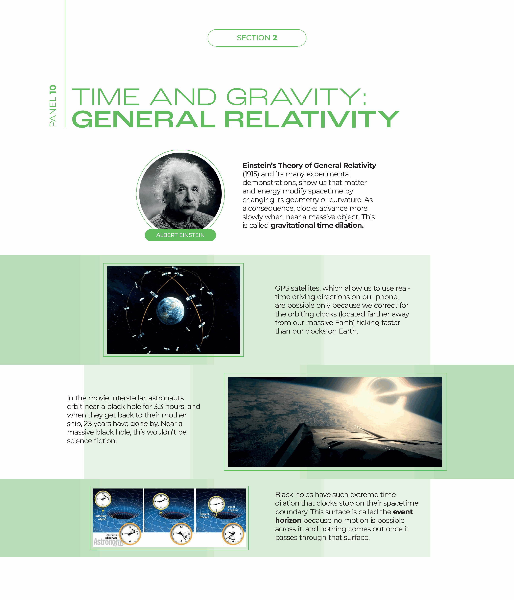
With general relativity, we take a further step. Space and time are not fixed, but they are modified by energy and matter. Time is slower closer to a massive object. Gravitational time dilation needs to be accounted for for GPS to work, and its effect is dramatic close to very massive objects such as black holes. Black holes have a boundary called an event horizon, beyond which nothing can return that has entered.
Albert Einstein gave us this new description of gravity over 100 years ago. His theory says that mass tells space how to curve and space tells mass how to move. In addition to predicting exotic phenomena such as black holes, another consequence of Einstein's theory is that if massive objects are orbiting around one another they create gravitational waves. Gravitational waves are ripples in the fabric of spacetime that travel at the speed of light and carry information about the system that created them. While all accelerating mass creates gravitational waves, the ones that will be strong enough to be picked up will be made by very dense objects in our universe such as stars known as white dwarf stars, neutron stars, and black holes.
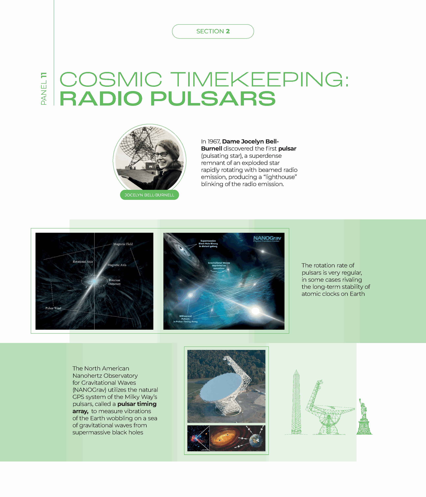
We have seen how clocks work. Our galaxy is provided with its own set of clocks, radio pulsars. Their regularity is such that in some cases they are more stable than atomic clocks. These precise clocks allow us to look for modification of spacetime induced by gravitational waves.
Pulsars were first discovered by Dame Jocelyn Bell Burnell in 1967. Pulsars are very dense collapsed stars that spin very quickly. Just as a figure skater spins more quickly when she pulls in her arms, when a big star collapses to form a neutron star, the rotation speeds up until some neutron stars spin as fast as a blender. Neutron stars also have very strong magnetic fields, not lined up with the star's rotation, which is why we get a "lighthouse" effect.
Particles are accelerated along the magnetic field and create beams of radio light – these were first discovered by Bell as radio pulses. Bell's graduate advisor was awarded the 1974 Nobel Prize in Physics for the discovery of pulsars.
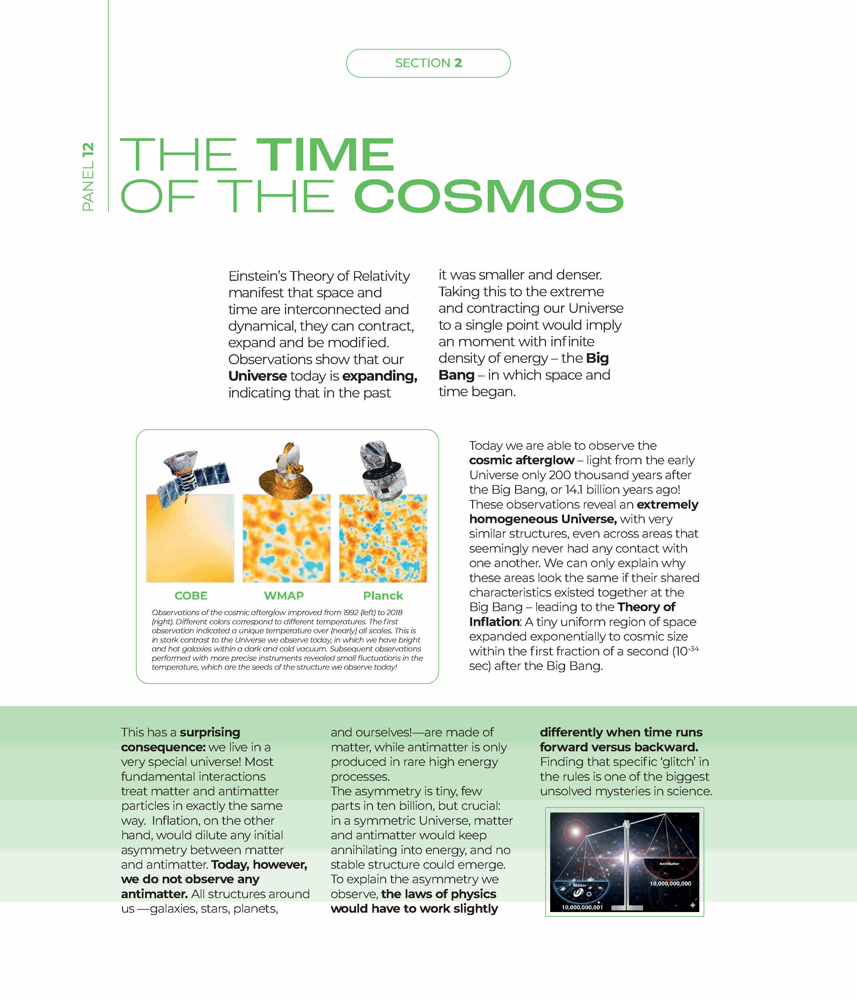
We have seen that Einstein's Theory of Special Relativity manifests that space and time are interconnected. General Relativity implies another step: space and time are dynamical, they can contract, expand and be modified by the mass and energy present in the Universe. Hubble's observations in the 1930s showed that our Universe is not fixed, but is expanding. This observation came as a shock, first of all to Einstein, but is perfectly compatible with Einstein's equations. If the Universe is now expanding, in the past it was smaller and denser. Taking this to the extreme and contracting our Universe to a single point would imply a moment with infinite density of energy: the Big Bang first proposed by Lemaitre, a Jesuit priest. In this instant not only what is contained in the Universe, but also time and space themselves began (... Augustine was right…).
Today we are able to observe the cosmic afterglow of this explosion. The Cosmic Microwave Background (CMB) is light from the early Universe only 400 thousand years after the Big Bang, or 14.1 billion years ago! The figure shows how CMB measurements improved from 1992 (left, COBE NASA's Mission) to 2018 (right, Planck ESA's mission). Different colors correspond to different temperatures, with differences on the scale of less than 1/1000 of a degree Kelvin. The first observation indicated a unique temperature over (nearly) all scales. This is in stark contrast to the Universe we observe today, in which we have bright and hot galaxies within a dark and cold vacuum. Subsequent observations performed with more precise instruments revealed small fluctuations in the temperature, which are the seeds of the structure we observe today!
These CMB observations reveal an extremely homogeneous Universe, with very similar structures. In the classic Big Bang theory, we would expect patches with an extension of about 2 degrees to have been in enough contact to smoothen anisotropies. However, the maps shows a high degree of uniformity everywhere, even on angular scales much larger than the 2 degrees. We can only explain why these areas look the same if their shared characteristics existed together at the Big Bang – leading to the Theory of Inflation: A tiny uniform region of space expanded exponentially to cosmic size within the first fraction of a second (10-34 sec) after the Big Bang. Inflation is a very speculative theory, which is favored because it explains several puzzles in the Big Bang theory. It is believed that inflation might go on forever, but even if inflation is eternal in the future, it has been shown that it cannot be eternal in the past, even inflation had a beginning!
Inflation smoothens asymmetries. This has another surprising consequence: we live in a very special universe! Most fundamental interactions treat matter and antimatter particles in exactly the same way. Inflation would dilute any initial asymmetry between matter and antimatter. These two facts lead us to expect the same amount of matter and antimatter in our Universe. Today, however, we do not observe any antimatter. All structures around us —galaxies, stars, planets, and ourselves!—are made of matter, while antimatter is only produced in rare high energy processes. The asymmetry is tiny, few parts in ten billion, but crucial: in a symmetric Universe, matter and antimatter would keep annihilating into energy, and no stable structure could emerge. To explain the asymmetry we observe, the laws of physics would have to work slightly differently when time runs forward versus backward. Finding that specific 'glitch' in the rules is one of the biggest unsolved mysteries in science.
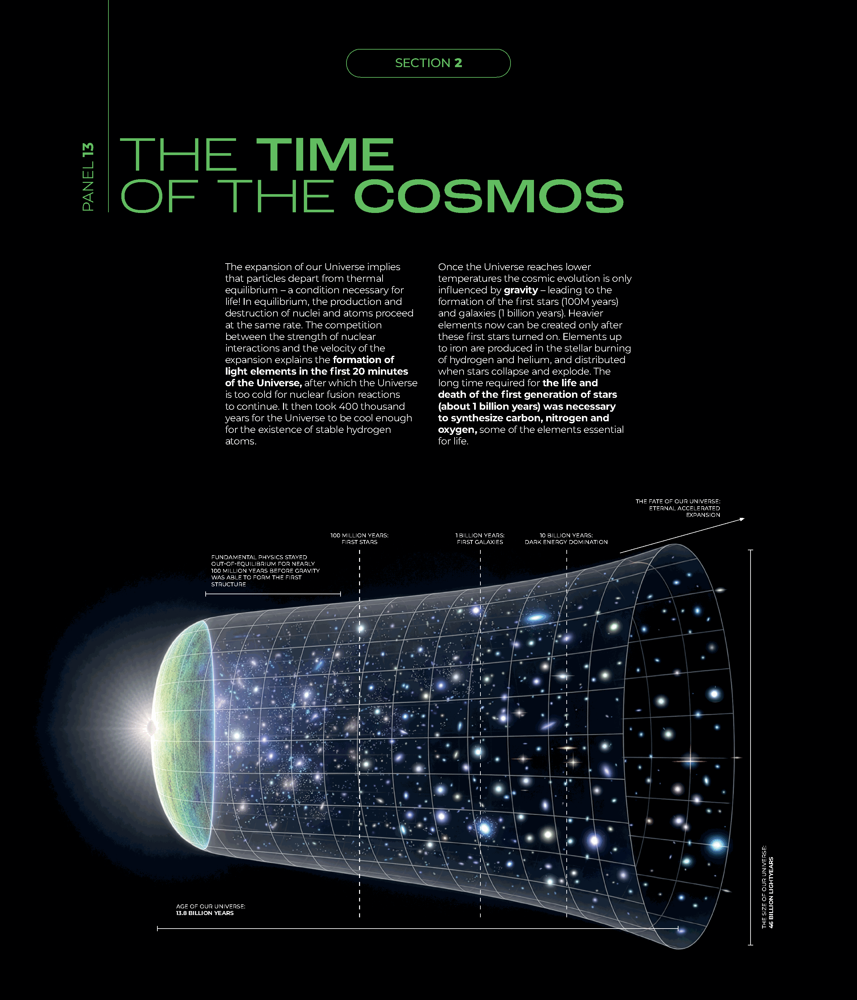
We are now going to take a quick tour in the evolution of our Universe. The expansion of our Universe implies that particles depart from thermal equilibrium – a condition necessary for life! In equilibrium, the production and destruction of nuclei and atoms proceed at the same rate, and no stable matter would exist. The fact that nuclear reactions fall out thermal equilibrium implies that some amounts of matter is left over, and constitutes the basic building blocks to make what we see now. The departure from equilibrium is determined by the competition between the strength of nuclear interactions (which tends to keep particles in equilibrium) and the velocity of the expansion (which dilutes the particles density, making it harder to find each other). Quantitative studies of this competition allowed to determine that the formation of light elements took place in the first 20 minutes of the Universe, after which the Universe is too cold for nuclear fusion reactions to continue. At this time, the Universe mostly contains nuclei of hydrogen (protons and deuterium) and helium, with traces of lithium.
It then took 400 thousand years for the Universe to be cool enough for the existence of stable hydrogen atoms. This is about the time that light and matter decouple, and from when we get the CMB. Once the Universe reaches lower temperatures the cosmic evolution is only influenced by gravity – leading to the formation of the first stars (100M years) and galaxies (1 billion years). Heavier elements now can be created only after these first stars turned on. Elements up to iron are produced in the stellar burning of hydrogen and helium, and distributed when stars collapse and explode. The long time required for the life and death of the first generation of stars (about 1 billion years) was necessary to synthesize carbon, nitrogen and oxygen, some of the elements essential for life.
The formation of even heavier nuclei is still an open field of research. Supernovae and neutron star mergers are thought to be site for heavy elements production.
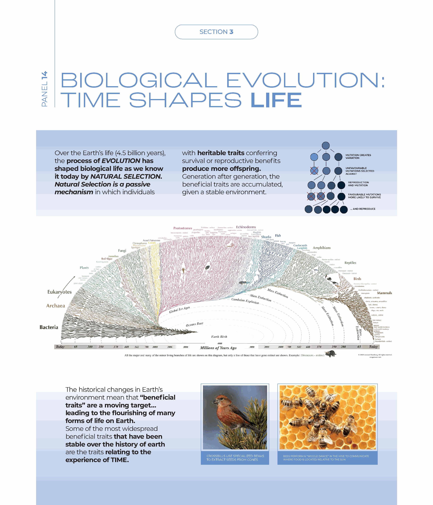
From the evolution of the Universe we move to the evolution of life and our path gets back to our experience of Time on Earth. The evolution of life on Earth was also a long process, which started about 4 billion years ago. Life as we know it now took a long time to come about.
The process that shaped life as we know it is called Natural Selection, which is a mechanism in which individuals with heritable traits conferring survival or reproductive benefits produce more offspring. Generation after generation, the beneficial traits are accumulated and the unfavorable mutations are lost, as exemplified in the diagram in the top right corner.
The environment plays a very important role in favoring some traits over others: traits that can be beneficial in a desert, such as the ability to store water, are not beneficial in other environments. And the historical changes in Earth's environment meant that what traits were "beneficial" throughout the evolution of life was really a moving target. As a consequence, innumerable forms of life flourished (and perished) in the past 4 billion years, as you can appreciate in the diagram in the center of the panel. Humans are just at the very tip of this huge family tree.
At the beginning of this section on Biology and Time, we wanted to touch upon the topic of evolution, not just to show how life was shaped THROUGH Time, but also that life was shaped BY Time, and more specifically by the experience of Time we have on Earth, such as for example the alternation of day and night. Some of the "beneficial traits" favored by natural selection highlight that individuals who could better deal with our experience of time were more likely to survive and spread.
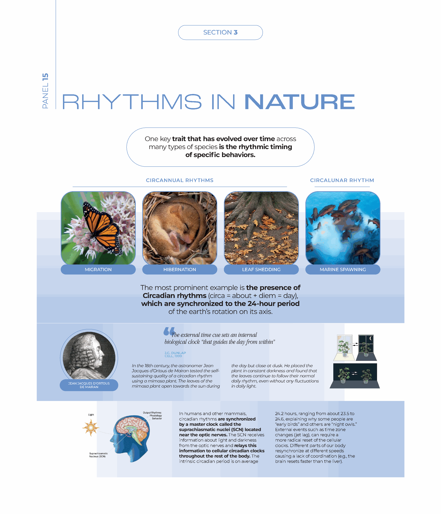
The most evident of these beneficial traits are the ways in which organisms "synchronize" to nature's cycles: the seasons cycle every year, the moon cycle approximately every month, and obviously the daily cycle of day and night, light and dark. Examples of "circannual rhythms" (rhythms that have a period of approximately one year) are animal migrations, hibernation during the cold season, leaf shedding. Trees shed leaves to avoid losing water during the winter and it is mainly triggered by photoperiodism, which the detection of shorter light periods. Examples of "circalunar rhythms" are more rare in nature but some exist: for example, some fish synchronize their reproductive cycles with lunar cycles and align egg and sperm release with full or new moons.
The rhythms that are most known and evident in our human experience are "circadian rhythms" (from latin "circa" = approximately, and "diem" = day), which are those rhythms that are synchronized to the 24-hour period of the Earth's rotation on its axis. Circadian rhythms can be observed in most organisms. The most fascinating aspect of these rhythms is that they are not determined by external cues such as the presence of light and dark, but are set by an internal clock. The first scientist to make this interesting observation was Jean Jacques D'Ortous De Mairan, who verified that mimosa plants open their leaves during the day and close them during the night even when placed in constant darkness.
Circadian rhythms in humans, such as the sleep-wake patterns, hormone release, digestion, and temperature, are synchronized by a master clock in our brain (the suprachiasmatic nuclei) which receives information about light and darkness, and uses these external cues to reset the internal clocks which are present in every single cell of our body. Without this master clock, our circadian rhythms would slowly drift from 24 hours to, on average, a period of 24.2 hours. Most organisms present similar periods that are not exactly consistent with the Earth's rotation, as demonstrated by experiments on flies from which the SCN (the master clock) was removed. An experience associated with the need for a master clock to resets the cell clocks is jet lag: light and darkness cues help reset our clocks but different parts of our resynchronize at different speeds causing a lack of coordination (e.g. the brain resets faster than the liver).
Connecting back to the previous panel on evolution, these rhythms (migration, hibernation, sleep-wake cycle) are written in our DNA: they are heritable traits that proved beneficial and spread generation after generation.
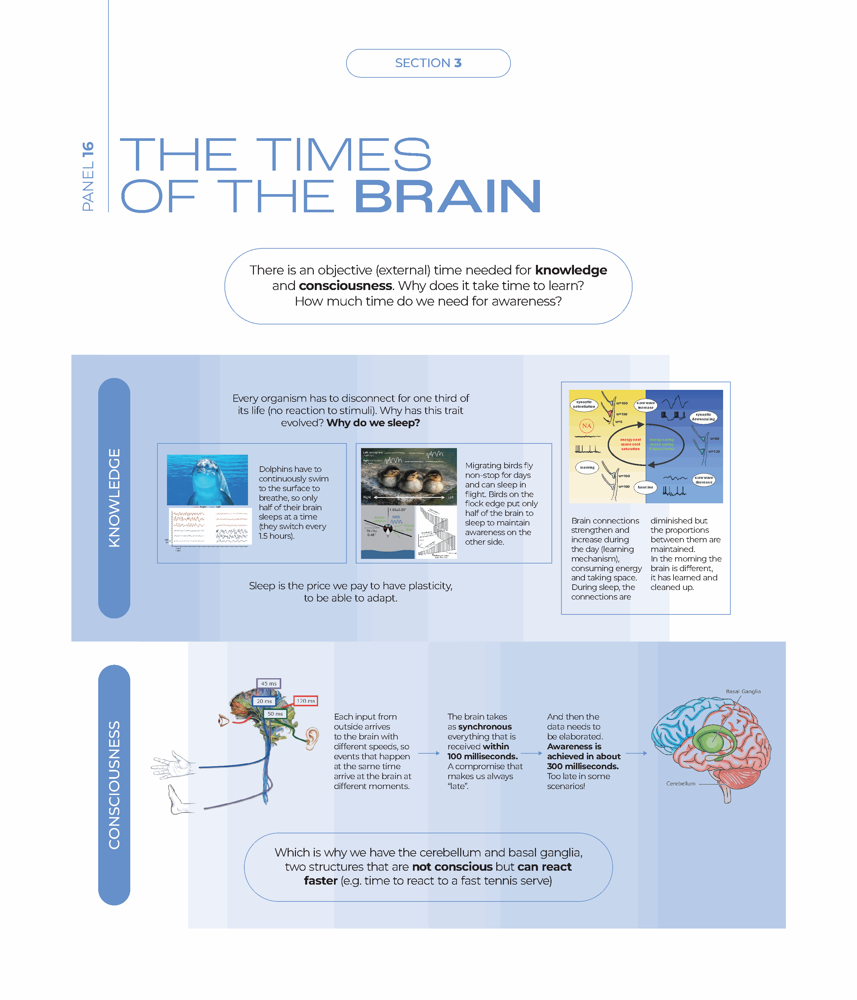
In the next couple of panels we will take a look at the experience of time our brain has. The first experience I would like to discuss is again connected to the sleep-wake patterns. An interesting characteristic shared by every organism with at least two or three neurons is the need to sleep approximately one third of its life. It is interesting that this trait has evolved: while we sleep we block external stimuli and we are more vulnerable to dangers, such as predators. Why would such a trait evolve? Why do we sleep? Two very interesting examples that highlight the fact that sleeping is necessary are:
First, dolphins, who are mammals and have lungs, and therefore need to surface to breath at least every 15 minutes. How can they sleep? Dolphins evolved to put only half of their brain to sleep at a time. They switch approximately every 90 minutes. Second, migrating birds. Some birds fly for days or even weeks without stopping. These birds can sleep while flying, but they can also put just half of their brain to sleep. This is helpful because they can keep on eye out for predators or dangers. Specifically, birds on the left side of a flock, turn off the left side of their brain, because each brain side control the eye on the opposite side.
So, it is evident that sleeping is necessary. Why? While we sleep our brain cleans itself. During the day, brain connections strengthen and increase (meaning that we store data, we learn). This process consumes energy and takes physical space in our brain. During sleep, these connections diminish, but the proportions between them are maintained (meaning that a stronger connection is more likely to remain the following day). In the morning our brain is different, it has learned and cleaned up. Sleep is the price we pay for plasticity.
The second experience our brain has of time is the delay between an external stimulus and our consciousness and the need to understand event synchrony: each input from outside arrives to the brain at slightly different times (sound, light, …) even for events that happen at the same time. Our brain evolved in a way that considers synchronous everything that is received within 100 milliseconds. Once the data is processed by our brain, approximately 300 milliseconds went by. Therefore, we are always late! In some cases, too late, which is why our brain contains two structures (the cerebellum and the basal ganglia) that are not conscious but can react faster (like rapid limb withdrawal from heat or what we call muscle memory when performing habitual tasks).
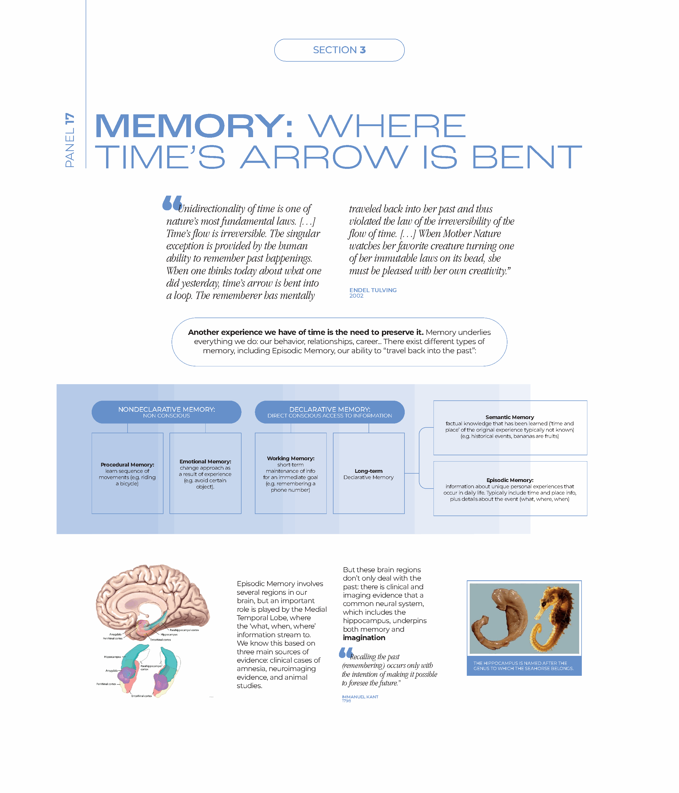
This last Biology panel also looks at our brain's ability to retain information: Memory. In the physics section, when we talked about entropy, we discussed the unidirectionality of time. Experientially, it is one of nature's most fundamental laws. I will read this quote from Endel Tulving, a famous psychologist and cognitive neuroscientist: "Unidirectionality of time is one of nature's most fundamental laws. Time's flow is irreversible. The singular exception is provided by the human ability to remember past happenings. When one thinks today about what one did yesterday, time's arrow is bent into a loop. The rememberer has mentally traveled back into her past and thus violated the law of the irreversibility of the flow of time. When Mother Nature watches her favorite creature turning one of her immutable laws on its head, she must be pleased with her own creativity."
Memory underlies everything we do: our behavior, relationships, career, … What is described as "mental time travel" is our ability to remember specific events from our past experience. This type of memory is called "Episodic Memory". Typically, it includes information about the what, where, and when of an event. What happened, where it happened, and when.
There exist different types of memory though: "nondeclarative memory", meaning non conscious memory, such as the muscle memory we mentioned in the previous panel, and "declarative memory", which includes "episodic memory", but also "working memory" (short term memory) and "semantic memory", which is memory of factual knowledge, such as remembering historical events.
Episodic memory involved several regions of our brain, but an important role is played by the Medial Temporal Lobe and specifically the Hippocampus. An interesting observation is that the regions involved in episodic memory are the same that activate when we imagine something that could happen in the future. Once again our brain bends time's arrow.
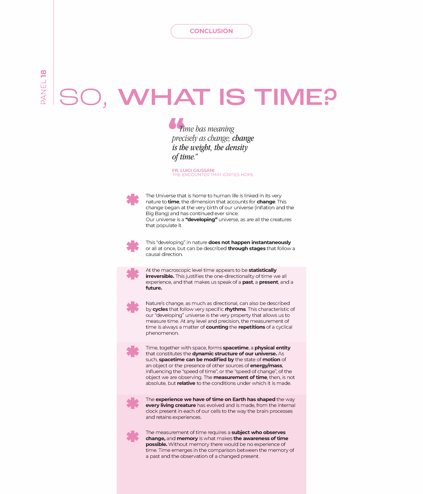
We are at the end of our exploration. We have learned about many aspects of the reality of time. We want to underline a few of which the first has surprised us and really revealed to us a core aspect of time: time is the dimension that accounts for change. Our universe is a "developing" universe, as are all the creatures that populate it.
It is interesting to see how this has been described by Fr Luigi Giussani, when talking about existential experience of time, not from a scientific point of view: "…time has meaning precisely as change; change is the weight, the density of time."
The Universe that is home to human life is linked in its very nature to time, the dimension that accounts for change. This change began at the very birth of our universe (inflation and the Big Bang) and has continued ever since. Our universe is a "developing" universe, as are all the creatures that populate it. This "developing" in nature does not happen instantaneously or all at once, but can be described through stages that follow a causal direction.
At the macroscopic level time appears to be statistically irreversible. This justifies the one-directionality of time we all experience, and that makes us speak of a past, a present, and a future. Nature's change, as much as directional, can also be described by cycles that follow very specific rhythms. This characteristic of our "developing" universe is the very property that allows us to measure time. At any level and precision, the measurement of time is always a matter of counting the repetitions of a cyclical phenomenon.
Time, together with space, forms spacetime, a physical entity that constitutes the dynamic structure of our universe. As such, spacetime can be modified by the state of motion of an object or the presence of other sources of energy/mass, influencing the "speed of time", or the "speed of change", of the object we are observing. The measurement of time, then, is not absolute, but relative to the conditions under which it is made.
The experience we have of time on Earth has shaped the way every living creature has evolved and is made, from the internal clock present in each of our cells to the way the brain processes and retains experiences.
The measurement of time requires a subject who observes change, and memory is what makes the awareness of time possible. Without memory there would be no experience of time. Time emerges in the comparison between the memory of a past and the observation of a changed present.
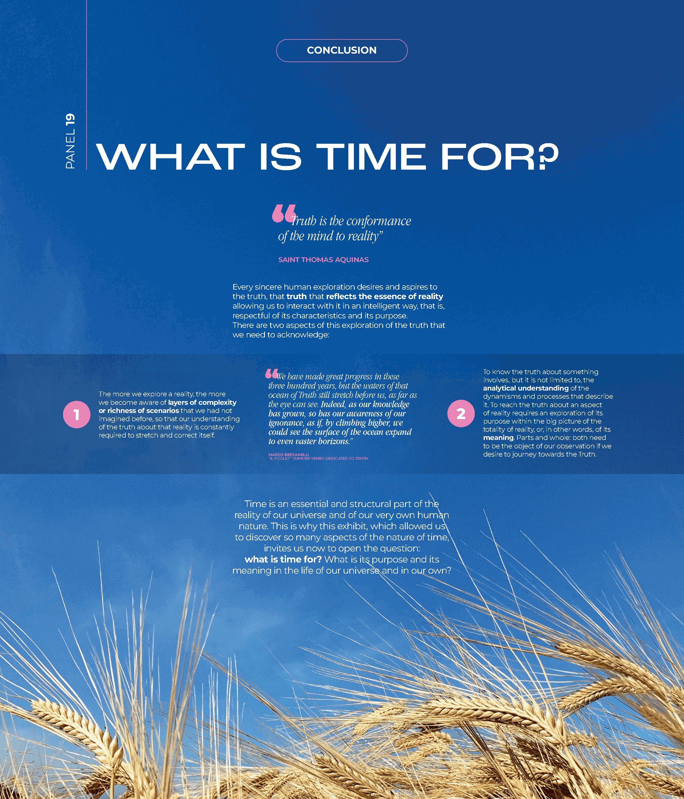
Now we want to conclude this exploration on the nature of time offering a couple of last comments:
Every sincere human exploration desires and aspires to the truth, that truth that reflects the essence of reality allowing us to interact with it in an intelligent way, that is, respectful of its characteristics and its purpose.
When exploring the truth ( in this case we have explored the truth of time) we need to consider that: The more we explore a reality, the more we become aware of layers of complexity or richness of scenarios that we had not imagined before, so that our understanding of the truth about that reality is constantly required to stretch and correct itself.
And also: To know the truth about something involves, but it is not limited to, the analytical understanding of the dynamisms and processes that describe it. To reach the truth about an aspect of reality requires an exploration of its purpose within the big picture of the totality of reality, or, in other words, of its meaning. Parts and whole: both need to be the object of our observation if we desire to journey towards the Truth.
This is why this exhibit, which allowed us to discover so many aspects of the nature of time, invites us now to open the question: what is time for? What is its purpose and its meaning in the life of our universe and in our own?
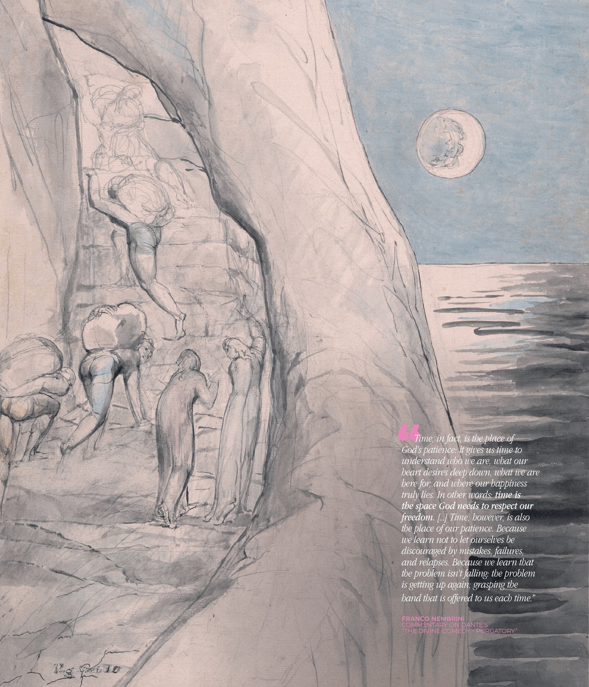
This is a question that we all need to ask and answer for ourselves.
We conclude with this quote that propose the answer of Dante through the words of Franco Nembrini, in a comment to Dante's Purgatory:
"Time, in fact, is the place of God's patience: it gives us time to understand who we are, what our heart desires deep down, what we are here for, and where our happiness truly lies. In other words: time is the space God needs to respect our freedom. [..] Time, however, is also the place of our patience. Because we learn not to let ourselves be discouraged by mistakes, failures, and relapses. Because we learn that the problem isn't falling: the problem is getting up again, grasping the hand that is offered to us each time."